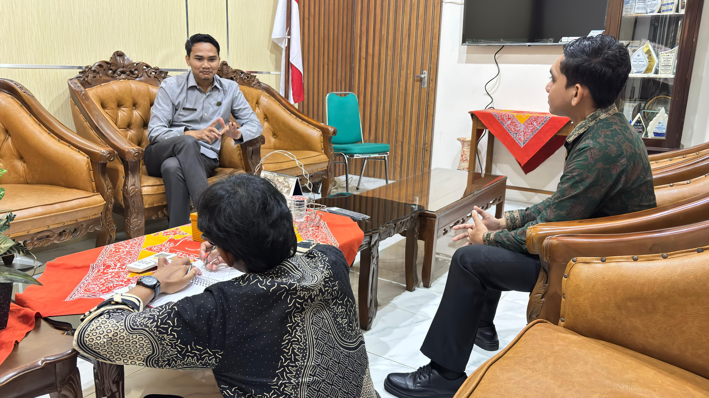
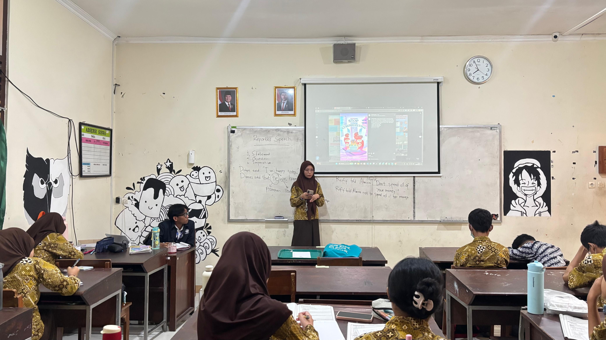
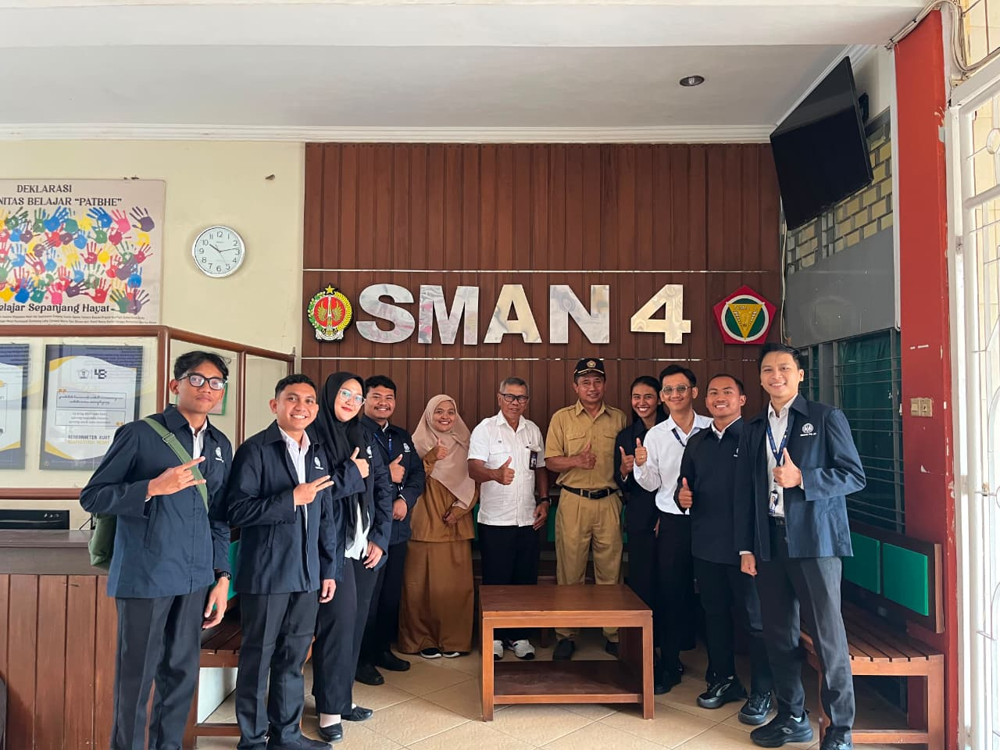
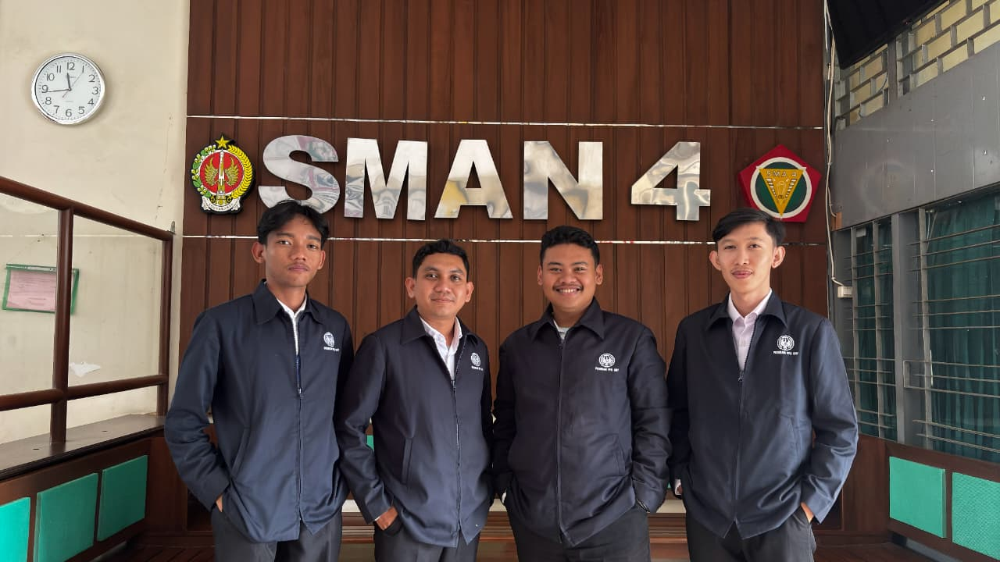

Ilyas Fandhi
Anggara
Dokumentasi perjalanan belajar, refleksi, pengalaman, dan inovasi pembelajaran selama perkuliahan PPG Calon Guru.
TENTANG SAYA
Identitas, latar belakang pendidikan, serta komitmen dalam mengembangkan kompetensi sebagai pendidik profesional di era digital.

Belajar tidak hanya tentang mengetahui, tetapi juga tentang berkembang.
Saya merupakan mahasiswa PPG Calon Guru yang memiliki ketertarikan tinggi pada dunia pendidikan, teknologi informasi, dan inovasi pembelajaran.
Melalui Seminar Pendidikan, saya mengevaluasi perspektif, mengeksplorasi strategi pengajaran modern, serta mengintegrasikan teknologi ke dalam ruang kelas.
PERJALANAN PPG
Perjalanan reflektif dua semester dalam mengasah kompetensi pedagogik, kepribadian, sosial, dan profesional.
SEMESTER 01
Membangun fondasi filosofis pendidikan, memahami karakteristik peserta didik, prinsip pengajaran, serta pengalaman PPL Terbimbing.
LIHAT REFLEKSI ↗SEMESTER 02
Pengembangan tingkat lanjut melalui Pembelajaran Sosial Emosional, Projek Kepemimpinan, Pengembangan Keprofesian, dan PPL Mandiri.
LIHAT REFLEKSI ↗REFLEKSI AKHIR PPG
Refleksi menyeluruh selama mengikuti program PPG, visi pendidikan masa depan, penguasaan 4 kompetensi guru profesional, dan rencana tindak lanjut.
LIHAT REFLEKSI ↗KARYA INOVATIF
Desain karya inovatif evaluasi berbasis gim web interaktif (Phaser.js) untuk mengatasi kelelahan kognitif peserta didik pada jam pelajaran terakhir.
LIHAT INOVASI ↗YANG SAYA PELAJARI
Rangkuman mata kuliah yang telah ditempuh selama masa studi PPG Calon Guru.
WAWASAN & PERKEMBANGAN
Refleksi mendalam atas perubahan pola pikir dan peningkatan kompetensi profesional.
Pembelajaran Utama
Mengajar bukan sekadar mentransfer pengetahuan teknis, melainkan menuntun kodrat dan potensi unik setiap peserta didik dengan pendekatan yang humanis.
Perubahan Pola Pikir
Berubah dari pendekatan yang berpusat pada guru (teacher-centered) menjadi pembelajaran diferensiasi yang adaptif dan inklusif.
Penemuan Diri
Menemukan pentingnya empati sosial-emosional dan integrasi teknologi yang tepat guna dalam menciptakan kelas yang interaktif.
Rencana Aksi
Berkomitmen menjadi pendidik pembelajar sepanjang hayat (lifelong learner) yang terus berinovasi dan berkontribusi bagi dunia pendidikan.
DOKUMENTASI VISUAL
Dokumentasi momen penting selama pelaksanaan perkuliahan dan praktik pengalaman lapangan.




